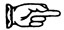

Круглая Радуга
3.
В Зоне
Schwarzkommando захватили Ахтфадена, но Чичерину достался Нэриш. Тот обошёлся ему в Дер-Шпрингера и трёх военнослужащих в медсанбате, с укусами. У одного прокушена артерия. Нэриш прорывался в стиле Эди Мёрфи. Обмен коня на слона—Нэриш в состоянии наркотического гипноза орал про Святой Круг и Крест Ракетостабилизаторов. Но чёрным неизвестно то, о чём ещё знал Нэриш:
(а) с земли имелась радиосвязь с S-Gerät, но лишь в таком направлении,
(б) имелась проблема между сервоприводом и дополнительной линией кислорода проложенной по направлению к корме от основного бака,
(в) Вайсман не только координировал проект S-Gerät в Нордхаузене, но ещё и командовал батареей запустившей Ракету 00000.
Тотальный шпионаж. Кусочек за кусочкам эта мозаика растёт. Чичерин, без сейфа, носит её в своём мозгу. Каждый кусок и осколочек вписываются. Куда более ценная, чем мозаика Равенны, иногда предстаёт на фоне этого неба крахмального цвета….
Радиосвязь + кислород = форсажная камера некоего рода. Однако Нэриш говорил также об асимметрии, какой-то груз возле третьей лопасти стабилизатора, что делало контроль качки и рысканья сложным почти до невозможности.
Но разве та форсажная камера не добавит асимметричного сгорания, и не будет ли нагрев больше, чем конструкция способна выдержать? Чёрт, почему он не захватил хоть какого-нибудь специалиста движущей системы? Или Американцы их всех собрали?
Майор Марви, охотничий нож в зубах и два автомата Томсона упёрты в бёдра, так же ошарашен на поляне, как и остальные атакующие, не в настроении для разговоров. Вместо этого он хмурится и хлыщет водку из бездонного котелка Джабаева. Да пусть хоть кто из инженеров двигательного отдела по S-Gerät покажет нос свой в Гармише, уж Марви даст ему прочхаться. Так вот оно делается. Западная разведка, Русские пальцы на спусковом крючке.
О, он нюхом чует Енцина… даже сейчас чёрный возможно смотрит на него из ночи. Чичерин закуривает сигарету, зелёносинелавандовый огонь оседает в жёлтый… он держит пламя дольше чем нужно, думает пусть он. Он не станет. Я бы нет. Ну… может и да….
Но в эту ночь приблизились на квантовый скачок. Они точно встретятся. Это случится из-за S-Gerät, неважно реален тот или выдумка, неважно работает ли или разбит, они встретятся лицом к лицу. Тогда уж…
А тем временем, что за таинственный агент Советской разведки, о котором говорит Марви? С паранойей тебя, Чичерин. Возможно в Москву настучали про твою вендетту. Если они собирают улики для военно-полевого, то в этот раз Центральной Азией уже не обойдётся. Готовься к должности Последнего Секретаря посольства в Атлантиде. Сможешь вести переговоры насчёт арестов за наркотики всех утонувших Русских моряков, выправишь своему отцу визы в далёкую Лемурию, на солнечные курорты Саргассова моря, куда сбираются кости валяться и белеть, и насмехаться над проходящими судами. А за минуту до его отправления на полуденном течении, брошюрки втиснуты меж рёбер, скрутка круизных чеков втиснута в глазницу черепа, скажи ему про его чёрного сына—расскажи ему про тот день с Енциным в наползающем краю осени. Холодной как смертный холод апельсина присыпанного колотым льдом на террасе отеля в Барселоне si me quieres escribir ты уже знаешь, где я остановлюсь… холод в кончике твоего пальца счищающего кожуру, неизлечимо нагрянувший холод….
– Послушай,– Марви уже на поддаче и разозлён,– када мы даберёмся до тех х’сосов?
– Никуда не денутся, можешь не сомневаться.
– Ты ба знал ка на мня давют с Парижа! Со штаба! Фантастика! Тама навирху есь люди шо им ба покончать тех х’сосов прям щас. А то ж нажмут кнопку и не видать мне Мексиканских шлюх па гроб жизни. Типеря сичёш чё те черномазики удумали, хто-та должон тармазнуть их покуда не манданули, блядь—
– Этот человек из разведки, что ты видел—политика наших правительств легко может совпадать—
– Те в спину не дышит Дженерал Электрик. Дилон… Рид… Стандарт Ойл… блядь….
– Так это так и надо, парни,– вмешивается Чёртов Чиклиц.– Тут бизнесмены, чтоб правильно вести дела, вместо того, чтоб всем заправляло правительство. Твоя левая рука не знает что правая у тебя делает! Вам понятно?
– Чё за базар ващще? Политический диспут? Мало опустило, шо Schwarzkommando сорвались, нет, ещё не всё, не думай, шо легко отделаисся….
– А и как насчёт Герберта Гувера?– Чиклиц вскрикивает.– Он пришёл и накормил ваш народ, когда вы голодали. Тут любят Гувера—
– Да— Чичерин его прерывает,– что Дженерал Электрик тут делает, кстати?
Дружеский подмиг от майора Марви: «Мистер Своп был неразлей-вада со старым Рузвельтом, паимаиш? Тада Своп был у нё в Мазгавом Тресте. Евреи пашти все, но Своп окей. Вощем, у ДжиЭл тут связи с Сименс, они работали над управленем V-2, секёшь—
– Своп Еврей,– грит Чиклиц.
– Неа—Чёртов, сам низнаиш чё гриш.
– Я тебе говорю— Они впадают в препирательство соковыжималок про этническую принадлежность экс-Председателя ДжиЭл, полное яда и вялой ненависти. Чичерин прислушивается всего одним ухом. На него наползает лёгкое головокружение. Разве Нэриш, под наркотиками, не поминал представителя Сименс на заседаниях по S-Gerät в Нордхаузен? Да, и ещё человека IG. И разве Карл Шмиц из IG не сидит в совете директоров Сименс?
Марви спрашивать без толку. Он уже слишком пьян, чтобы держаться какой-либо одной темы. «А знаш, я мало чё разбрался када сюда прибыл. Блиадь, я ж думал I.G. Farben то у каво-та имя такое, знаш, шо то какой-та кент—алё, это I.G. Farben? Нет, этта его жена, мизус Farben! Йааах-ха-ха-ха!»
Чёртов Чиклиц переключился на свою обычную хохму с Элеонор Рузвельт: «На дниах я и мой сын Идиот—то есть, Элиот—пекли пирожные. Пирожные, послать нашим ребиатам за океан. Когда ребиата получат пирожные от нас, они испекут пирожные и пошлют домой, нам. Таким способом каждому достаётся пирожное!»
О, Вимпе! Старый V-трудяга, не ты ли это сказал? Что твоя IG станет истинной моделью держав?
Так оно доходит Чичерину, тут на просеке, с этими двумя придурками по сторонам от него, посреди обломков последнего запуска какой-то безномерной батареи, троса застыли на точке, где операторы выключили лебёдки, пивные бутылки валяются там же, куда были брошены последними солдатами в последнюю ночь, настолько явно всё говорит о масштабах разгрома, оперативной смерти.
– И, между прочим.– Смахивает будто очень большой белый Палец к нему обращается. Его Ноготь великолепно отманикюрен: разворачиваясь к нему, он медленно демонстрирует Отпечаток Пальца, который вполне может оказаться аэросъёмкой Дактилограда, города будущего, где каждая душа на учёте и где никуда не спрячешься. Прямо сейчас, суставы движутся с мягкими гидравлическими щелчками, Палец обращает внимание Чичерина на—
 Ракетный картель. Структура пронизывающая каждый орган, людской и бумажный, что когда-либо касался её. Даже в России… Россия покупала от Круппа, не так ли, от Сименса, от IG….
Имеются ли соглашения, на которые Сталин не пойдёт… и даже не знает ничего? О, Государство начинает обретать форму в разгосударствленной Германской ночи, Государство охватывающее океаны и поверхностную политику, суверенное как Интернационал или Римская Церковь, и Ракета душа его. IG Raketen. По цирковому яркие, плакатно красные и жёлтые, несчётные кольца, все вращаются вместе. Покручивается продетый в них чинный Палец. Чичерин убеждён. Не столько явными уликами, что обнаружил при передвижениях по Зоне, как из личной судьбы, от которой ему не уйти—всегда упираться в края откровений. В первый раз так случилось с Кыргызским Светом, и всё, что открылось ему тогда, был страх, который всегда будет удерживать его от того, чтобы проникать до конца. Он никогда не пройдёт дальше краёв этого сверх-картеля, что дал ему знать о себе в эту ночь, этого Ракетогосударства, чьи границы он не может пересечь….
Он будет тосковать о Свете, а о Пальце нет. Печально, весьма печально, похоже все до одного в деле. Каждый крохобор тут работает на IG Raketen. Все кроме него и Енцина. Его брата, Енцина. Не диво, что Они охотятся на Schwarzkommando… и….
И когда Они узнают, что я не тот, за кого они меня принимают… и с чего это Марви так на меня сейчас смотрит, глаза выпучил… о, не паникуй, не давай пищи его безумию, он просто по эту сторону от… от….